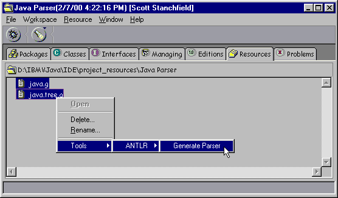

ANTLR VisualAge Interface
Notes
-
This tool will only work in VisualAge for Java, version 3. Also note that the Linux version of VisualAge for Java does not come with the Tool API. You need to download the tool API for the Linux version from VisualAge Developer Domain if you want to use this tool.
-
This tool has only been tested with version 2.7.0 of ANTLR. It may not work with different versions.
-
The tool does not yet support generation for use with ParseView. I will be adding a class later that supports ParseView.
The ANTLR-VisualAge Interface tool allows you to run ANTLR from inside VisualAge for Java. ANTLR will generate classes that are directly added to a project within VisualAge for Java. If you're not familiar with ANTLR, please visit http://www.antlr.org. You can also read my ANTLR Tutorial at http://www.javadude.com/articles/antlrtut (note that the tutorial may not be up to date with ANTLR 2.7.0, but should give you the general ideas)
Installation
To install the ANTLR-VisualAge interface, you must do the following:
-
Shutdown VisualAge for Java.
-
Download antlr-vaj-270-10.zip from this site.
-
Download the antlr 2.7.0 distribution from http://www.antlr.org
-
Download antlr270-patch.zip from this site
-
Unzip antlr-vaj-270-10.zip into \IBMVJava\ide\tools on the drive on which you installed VisualAge for Java. This will create directory
\IBMVJava\ide\tools\com-javadude-vaj-antlr
which contains the tool code.
Note: If you're using VisualAge for Java, version 3.5, the install directory will be \Program Files\IBM\VisualAge for Java\ide\tools
-
Unzip the antlr 2.7.0 distribution somewhere on your hard disk.
-
Copy the antlr-2.7.0\antlr dir into the \IBMVJava\ide\tools\com-javadude-vaj-antlr directory. There is already an antlr directory in there, and you should end up with files like ActionElement.class inside \IBMVJava\ide\tools\com-javadude-vaj-antlr\antlr as well as several subdirectories.
Note: If you would like, you can delete all of the ANTLR .java files from \IBMVJava\ide\tools\com-javadude-vaj-antlr\antlr. You do not need the .java files to run the tool.
-
Unzip the antlr270-patch.zip on top of \IBMVJava\ide\tools\com-javadude-vaj-antlr\antlr. This should replace the Tool.class and Tool$1.class files.
-
Start VisualAge for Java
Setting up a Project
To run ANTLR within VisualAge for Java, you must
-
Create a project for your application. For example, you might name this project "Parser Project"
Note that you can have multiple parser projects, each containing multiple grammars.
-
Create grammar files with a ".g" extension that ANTLR will process
Store these grammar files in
\IBMVJava\ide\project_resources\projectName
Where projectName is the name of your parser project. Using the above example project, you would save grammars similar to the following.
\IBMVJava\ide\project_resources\Parser Project\aGrammar.g \IBMVJava\ide\project_resources\Parser Project\someOther.g
Use whatever editor you want to edit the grammar files. The ANTLR-VisualAge Interface does not provide a grammar editor.
Generating Parsers
-
Open a project browser for the parser project. You can do this by double-clicking on the project from the workbench (if you haven't changed the default meaning of double-clicking).
-
Switch to the resources tab of the project browser.
-
Choose Tools->ANTLR->Generate Parser from the popup menu for any .g file.

Note that if you have multiple grammar files selected, all will be processed by ANTLR.
If you only want to process a single grammar, you may also double-click on the grammar file (or select Open from its popup menu) to run ANTLR on it.
-
Look at the VisualAge for Java console to see any ANTLR errors.
Source Code and Sample
If you're interested in the source code behind this tool, you can download this repository file for VisualAge for Java: antlr-vaj-dat.zip
Details on the VisualAge for Java Tool API can be found here.
To try the tool, you can download the Java sample grammar for ANTLR, bundled as a VisualAge for Java Feature: java-parser.zip. To use this sample (assuming you have already installed the ANTLR-VisualAge Interface):
- Download the above zip file
- Shutdown VisualAge for Java
- Unzip it into \IBMVJava\ide\features on the drive where you installed
VisualAge for Java
- Start VisualAge for Java
You should see a dialog pop up stating that it's installing the sample
- Choose File->Quick Start->Features->Add Feature
- Select "Java Parser Example" and press Ok
Note that VisualAge will report there are errors in this project. This is normal, as the code in the Main class references the yet-to-be-generated Parser classes.
- Double-click on project "Java Parser Example" in the
workbench.
- Choose the Resources tab.
- Select java.g and java-tree.g
- Choose Tools->ANTLR->Generate Parser from their popup menu.
- Run the Main class in Java Parser Example
License
The ANTLR-VisualAge interface is free for any use other than selling it as a stand-alone product.
Note that the ANTLR-VisualAge Interface is provided "as-is" without any warrantee or guarantee of suitability for any purpose. Scott Stanchfield cannot be held responsible for any damage caused by its use.
(In other words, use it for free at your own risk.)
Copyright © 1996-2013, Scott Stanchfield. All Rights Reserved.
Contact me at scott@javadude.com
JavaDude.com Home
Rounded-corner figures based on "More Snazzy Borders" by
Stu Nicholls
 Want
to hear about new stuff at JavaDude.com? Use this RSS Feed!
Want
to hear about new stuff at JavaDude.com? Use this RSS Feed!